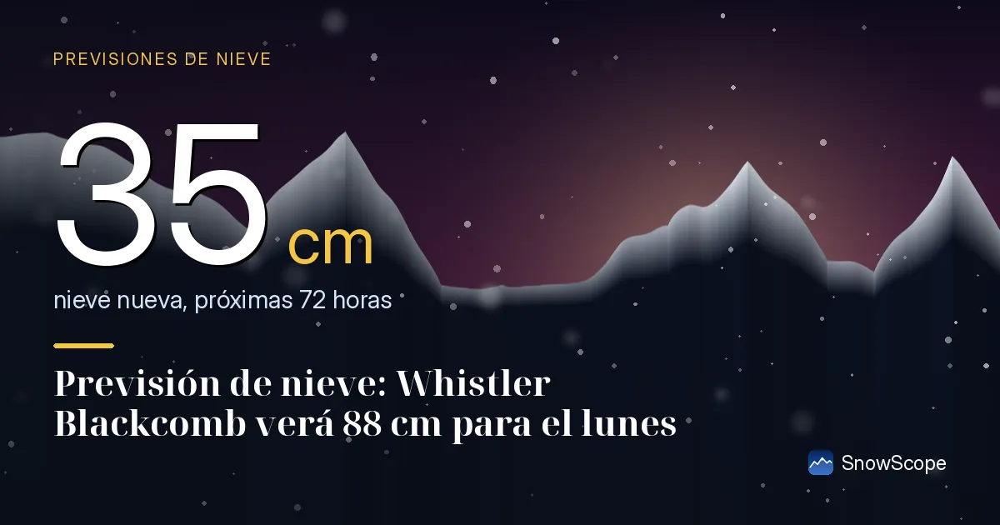
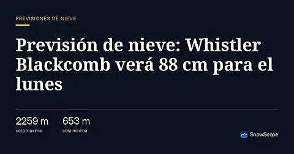
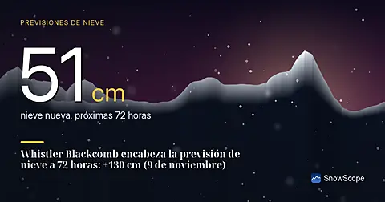

Partes de nieve · Regiones de nieve
Regiones de nieve: Se prevé que Whistler Blackcomb en Canadá reciba la mayor cantidad de nieve nueva a nivel mundial, con 88 cm esperados para el …
Previsión de nieve: Whistler Blackcomb verá 88 cm para el lunes

Se prevé que Whistler Blackcomb en Canadá reciba la mayor cantidad de nieve nueva a nivel mundial, con 88 cm esperados para el lunes 16 de noviembre. Los centros turísticos de los Alpes franceses y del oeste de EE. UU. también verán nevadas significativas.
Canadá: Whistler Blackcomb lidera las nevadas globales
SnowScope de nieve, actualizado el viernes 13 de noviembre, muestra que Whistler Blackcomb en el oeste de Canadá está listo para recibir los mayores totales de nieve nueva. Se esperan unos 29 cm en las próximas 24 horas, con un total de 88 cm pronosticados para el lunes 16 de noviembre. La cota de nieve allí se predice que estará alrededor de los 1300 m.
Otros centros turísticos canadienses también verán nieve fresca, aunque en cantidades menores. Se pronostica que Revelstoke y Mount Cain Alpine Park recibirán 20 cm para el lunes. Red también verá 20 cm, mientras que Mt. Baldy Family y Big White esperan recibir 17 cm y 16 cm respectivamente.


El buscador de cumbres de SnowScope es una app gratis para identificar montañas: apunta el móvil a las montañas y te dice el nombre de cada cumbre, con su altura, distancia y tiempo de subida. En nuestras pruebas, el 98 % de las cumbres que muestra están realmente a la vista, y en fotos reales corrigió errores de brújula de hasta 105° a 0,15°. Gratis con 3 nombres, todas las cumbres por 0,99 € en un solo pago.

SnowScope de nieve predice que Whistler Blackcomb recibirá 88 cm de nieve nueva para el lunes 16 de noviembre de 2026, liderando los centros turísticos globales.

Hemos comparado la nieve del 10 de noviembre con la mayor altura de nieve de cada invierno en 46 estaciones de esquí durante 46 inviernos. Un comienzo nevado ayuda, pero menos de lo que creen muchos esquiadores.

Un mapa de pendientes de Les Grands Montets y otras siete estaciones muestra cuánto terreno supera los 30°, 35° y 40°, y por qué ese umbral importa para los aludes.

Comparamos el mapa de espesor de nieve de SnowScope con 2.012 estaciones de medida: RMSE 7,7 cm, sesgo -0,5 cm, nieve o no nieve acertado el 88 % de las veces. Lo que funciona, lo que aún no y lo que mejoramos después.

Nuestra tabla diaria sigue la nieve que viene: las estaciones con más previsión para las próximas 24 horas y hasta el 12 de noviembre, en Europa, …